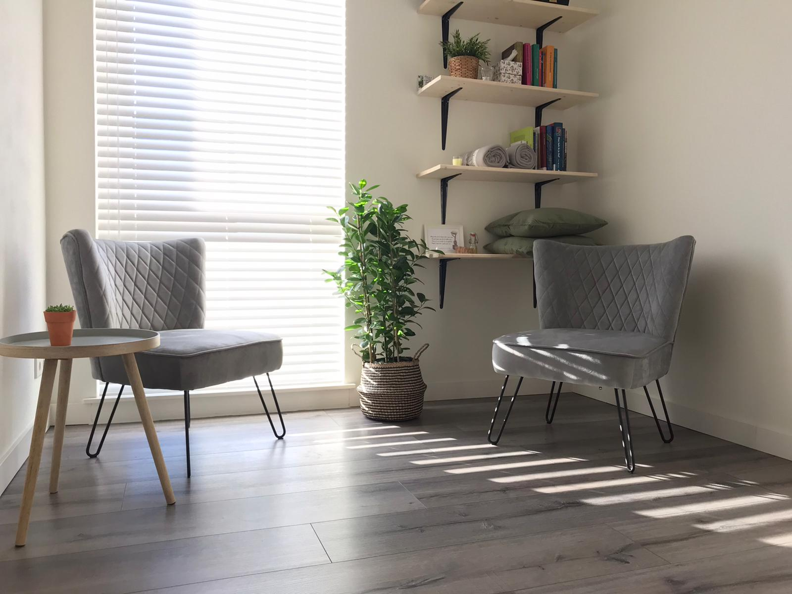

<div class="container">
    <div class="row align-items-center">
        <div class="col-xl py-4">
            
        </div>
        <div class="col-xl py-4">
            <h3 class="text-secondary mb-3"></i>Tarieven<i class="fa fa-regular fa-coins ml-3"></i></h3>
            <p class="mb-4"></i>Intake  <b>€ 25,00</b> per uur.
            </i>Individuele therapie    <b>€ 45,00</b> per uur.</p>
            <p class="mb-4">
                De gesprekken vinden plaats in mijn praktijk aan de Waterliniestraat 9 te Zwolle. 
                Gaat je voorkeur uit naar therapie op locatie? In overleg is dit mogelijk. 
                Ik hanteer een kilometervergoeding van <b>€ 0,46</b> per km. 
            </p>
            <h3 class="text-secondary mb-3"></i>Vergoeding<i class="fa fa-regular fa-gift ml-3"></i></h3>
            <p class="mb-4">
                Momenteel volg ik de opleiding Christelijk Ervaringsgericht Therapeut. 
                Zodra ik deze heb afgerond, is het mogelijk om een vergoeding vanuit de zorgverzekeraar te ontvangen. 
                Tot die tijd is deze mogelijkheid er helaas niet. 
            </p>
        </div>
    </div>
</div>
